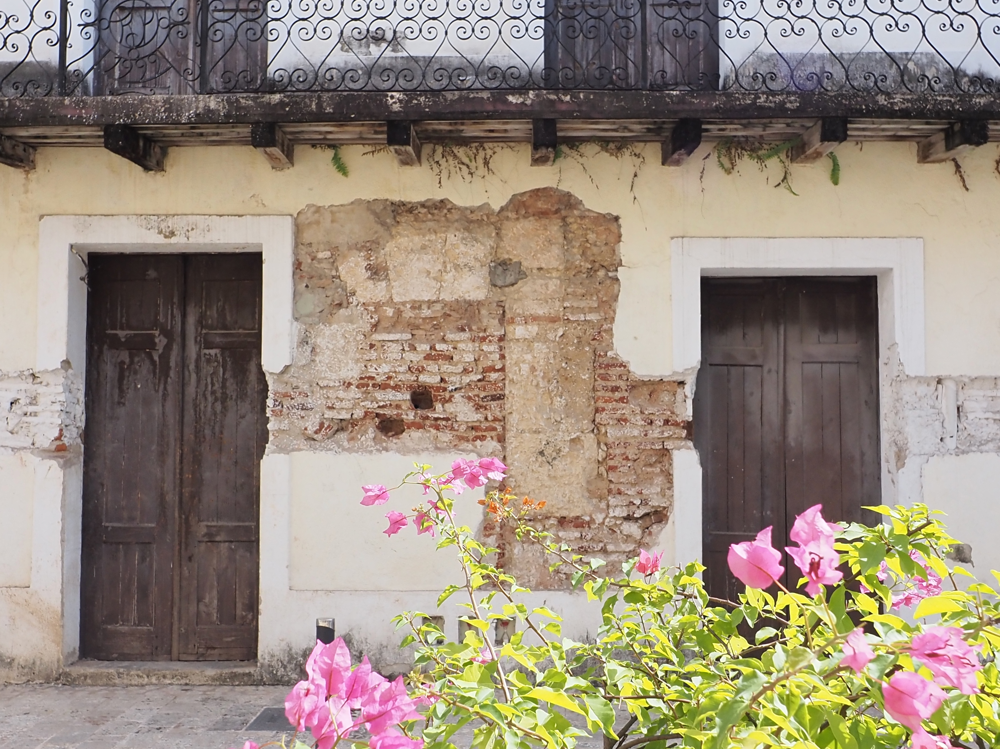
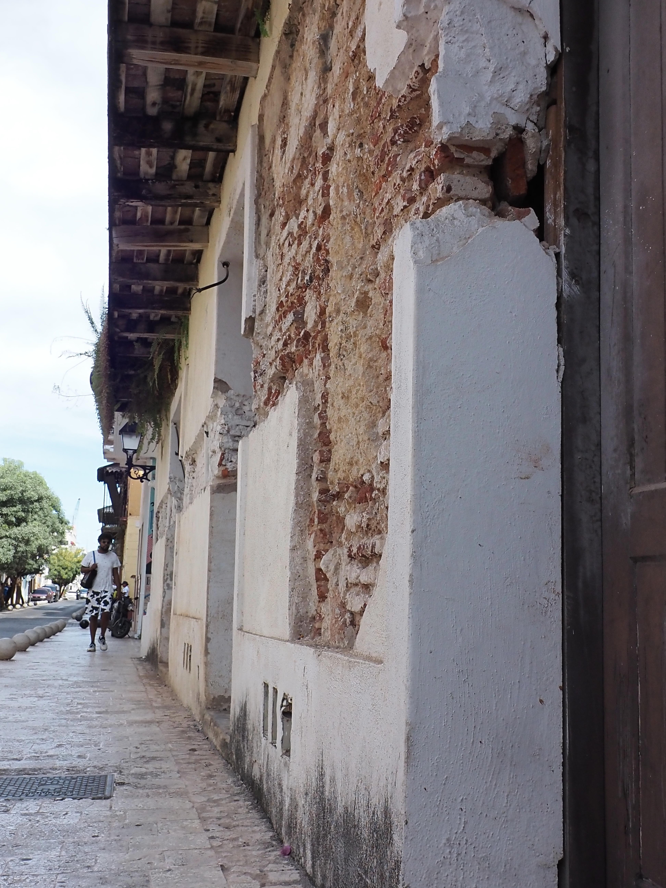
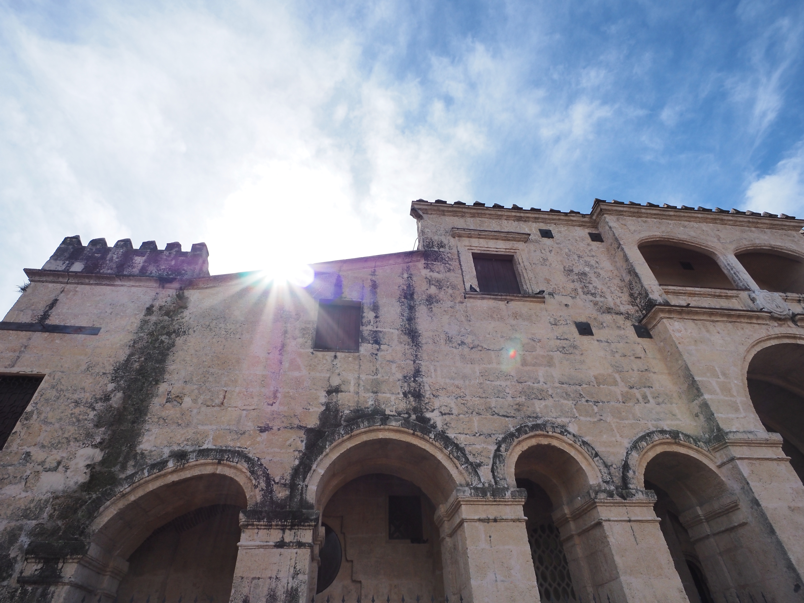
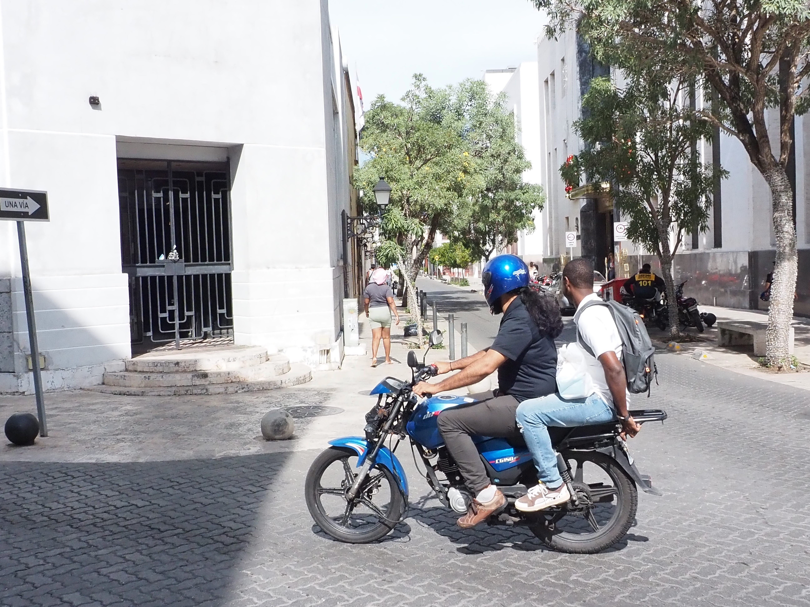

Henry Solórzano
Albums
Journal
Moment
About
Back to Albums
Santo Domingo II
December 2024
During a tour of the touristy area of Santo Domingo, it was nice to capture the older architecture.




All Albums
Giant Robot Fight Club
Japan
Following Japan
Summer in NYC
Bench Sitting
Streets of Reykjavik
People in Iceland
Haystack Rock
Santo Domingo II
Santo Domingo I
Downtown Durham
NC Folk Festival
Night in Cincinnati
District of Columbia
Montreal